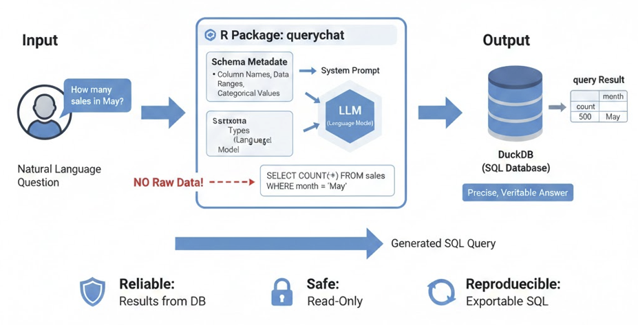
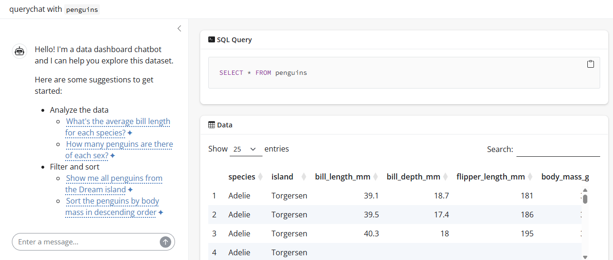

Глава 6 Shiny интерфейс для манипуляции данными на естественном языке (пакет querychat)
В предыдущих уроках мы научились создавать чат-интерфейсы и кастомизировать их внешний вид. Однако часто перед аналитиком встает задача не просто «поговорить» с моделью, а дать пользователю инструмент для исследования данных.
Представьте ситуацию: у вас есть дашборд с финансовыми показателями, и руководитель хочет не настраивать фильтры вручную, а просто написать: «Покажи продажи по региону Север за прошлый квартал».
Именно для таких задач создан пакет querychat. Он позволяет превратить любой датафрейм или базу данных в интерактивный диалог, где пользователь задает вопросы на естественном языке, а система автоматически генерирует SQL-запросы, фильтрует данные и обновляет визуализации.
6.1 Видео
6.1.1 Тайм-коды
- 00:00 — Введение
- 01:36 — Демонстрация интерфейса построенного на основе пакета querychat
- 04:27 — Как работает querychat
- 06:06 — Создание и запуск интерфейса с помощью querychat
- 09:50 — Подключение внешних источников данных
- 10:53 — Предоставление дополнительного контекста
- 18:22 — Интеграция querychat в свои Shiny приложения
- 27:28 — Инструменты в querychat
- 30:16 — Заключение
6.3 Конспект
6.3.1 Назначение пакета querychat
querychat — это вспомогательный R-пакет, предназначенный для создания интерактивных интерфейсов, которые позволяют пользователю общаться с данными на естественном языке.
Основное предназначение пакета — упростить интеграцию больших языковых моделей (LLM) с табличными данными и базами данных в среде Shiny. В отличие от стандартных чат-интерфейсов, querychat фокусируется на задачах Text-to-SQL и Text-to-R, позволяя:
- Автоматизировать написание запросов: Пакет берет на себя формирование промптов, описывающих структуру ваших таблиц (схемы данных), чтобы модель могла генерировать точный код для выборки и фильтрации.
- Бесшовно интегрироваться с Shiny: Предоставляет готовые UI и серверные модули для быстрого развертывания аналитических ассистентов.
-
Работать с различными источниками: Поддерживает как локальные
data.frame, так и внешние базы данных, обеспечивая безопасную передачу контекста данных модели. - Визуализировать процесс: Позволяет не только получать финальный ответ, но и отображать сгенерированный код, что критически важно для верификации результатов аналитиком.
6.3.2 Как это работает
querychat использует возможности больших языковых моделей (LLM) для перевода естественного языка в SQL-запросы. Модели любого масштаба — от небольших локальных до мощных флагманских решений от ведущих провайдеров — показывают отличные результаты в этой задаче. Однако даже лучшим моделям необходимо понимать структуру ваших данных для корректной работы.
Для решения этой задачи querychat включает метаданные схемы — названия столбцов, типы данных, диапазоны значений и категории — в системный промпт модели.
Важно: querychat не отправляет ваши необработанные данные в LLM. Модель получает только структурную информацию, достаточную для генерации точного запроса. Когда модель выдает SQL-код, querychat выполняет его в базе данных (по умолчанию используется DuckDB) для получения точных результатов.

Такая архитектура делает querychat надежным, безопасным и воспроизводимым инструментом:
- Надежность: Результаты запросов приходят из реальной базы данных, а не из сгенерированных моделью саммари. Это гарантирует точность и проверяемость данных, а также снижает риск «галлюцинаций».
-
Безопасность: Инструменты
querychatпо умолчанию работают только в режиме чтения (read-only), что исключает риск случайного удаления или изменения ваших данных. - Воспроизводимость: Сгенерированный SQL-код можно экспортировать и запустить в любой другой среде, поэтому ваш анализ не привязан к одному инструменту.
6.3.3 Быстрое создание и запуск интерфейса для манипуляции данных на естественном языке
В пакете querychat присутствует функция querychat_app(), в которую достаточно передать data.frame, название провайдера и LLM модели, и она соберёт базовый интерфейс для работы с переданной таблицей на естественном языке.
library(querychat)
library(palmerpenguins)
# Наиболее простой способ запуска приложения
querychat_app(
penguins,
client = "google_gemini/2.5-flash",
greeting = "Привет" # сгенерировать приветствие можно методом qc$generate_greeting(echo = 'all')
)
Для более гибкой настройки объекта ellmer::Chat, который создаётся под капотом querychat_app() (например, для добавления в чат дополнительных инструментов или подключения MCP сервера), вы можете передать в querychat_app() уже инициализированный объект ellmer::Chat.
# Запуск с кастомизированным объектом чата
# инициализируем объект чата
chat <- ellmer::chat_google_gemini()
# запускаем минимальное приложение
qc <- querychat(penguins, client = chat)
# запуск
qc$app()6.3.4 Подключение внешних источников данных
Помимо data.frame, в качестве входных данных вы можете передавать созданное через DBI интерфейс подключение к любой базе данных, и далее указать таблицу, которую хотите вывести в интерфейсе querychat.
Ниже пример подключения к MySQL:
library(DBI)
library(RMariaDB)
library(querychat)
# Connect to MySQL
con <- dbConnect(
RMariaDB::MariaDB(),
host = "localhost",
port = 3306,
dbname = "mydatabase",
user = "myuser",
password = "mypassword"
)
qc <- querychat(con, "my_table")
qc$app() # Launch the app
# Don't forget to disconnect when done
# dbDisconnect(con)6.3.5 Предоставление дополнительного контекста
При создании интерфейса querychat сам генерирует системный промпт для переданного в интерфейс объекта ellmer::Chat, но вы можете:
- Добавить собственные инструкции (аргумент
extra_instructions); - Добавить подробное описание данных (аргумент
data_description); - Использовать собственный шаблон для генерации системного промпта (аргумент
prompt_template).
library(querychat)
library(palmerpenguins)
# инициализируем объект чата
chat <- ellmer::chat_google_gemini()
# запускаем минимальное приложение
qc <- querychat(penguins, client = chat)
# просмотр системного промпта
cat(qc$system_prompt)
# Добавление описания данных
qc <- querychat(
penguins,
client = chat,
data_description = "data_description.md"
)
cat(qc$system_prompt)
# Добавляем расширенные инструкции
instructions <- "
- Отвечай всегда на русском языке.
- Придерживайся темы и обсуждай только касающееся панели данных (дашборд).
- Отказывайся отвечать на вопросы, не относящиеся к теме.
"
qc <- querychat(
penguins,
client = chat,
extra_instructions = instructions
)
cat(qc$system_prompt)
# Используем пользовательский шаблон
qc <- querychat(
penguins,
client = chat,
data_description = "data_description.md",
extra_instructions = instructions,
prompt_template = 'custom_prompt.md'
)
cat(qc$system_prompt)
qc$app()Встроенный шаблон системного промпта можно найти с помощью команды system.file('prompts', 'prompt.md', package = 'querychat').
Дефолтный системный промпт включает в себя:
* Базовый набор правил и рекомендаций, в том числе по использованию инструментов для выполнения запросов и обновления приложения.
* SQL-схему предоставленного вами фрейма данных:
* Названия столбцов;
* Типы данных;
* Для текстовых столбцов, содержащих менее 10 уникальных значений (количество регулируется аргументом categorical_threshold), мы предполагаем, что это категориальные переменные, и включаем список значений;
* Для столбцов с целыми и вещественными числами мы указываем диапазон.
* Описание данных (если предоставлено через data_description).
* Дополнительные инструкции, которые вы хотите использовать для управления поведением querychat (если они предоставлены через extra_instructions).
6.3.6 Внедрение querychat в своё Shiny приложение
Вы можете не только строить готовый интерфейс через querychat, но и интегрировать его в свои приложения. Это имеет смысл, если ваше приложение отвечает следующим параметрам:
- Единый источник данных (или набор связанных таблиц, которые можно объединить).
- Множество фильтров, позволяющих пользователям анализировать и изучать данные различными способами.
- Несколько вариантов визуализации и вывода — все они зависят от одних и тех же отфильтрованных данных.
Шаги внедрения querychat в собственное Shiny приложение:
- Инициализируйте экземпляр QueryChat, используя ваши данные.
- Добавьте компонент пользовательского интерфейса (либо
$sidebar(), либо$ui()). - Используйте реактивные значения, такие как
$df(),$sql()и$title()для создания выходных данных, реагирующих на запросы пользователей.
library(shiny)
library(bslib)
library(querychat)
library(DT)
library(palmerpenguins)
# Step 1: инициализация QueryChat
chat <- ellmer::chat_google_gemini()
qc <- QueryChat$new(penguins, client = chat)
# Step 2: Добавление UI компонента
ui <- page_sidebar(
sidebar = qc$sidebar(),
card(
card_header("Data Table"),
dataTableOutput("table")
),
card(
fill = FALSE,
card_header("SQL Query"),
verbatimTextOutput("sql")
)
)
# Step 3: Используем реактивные выражения в серверной логике
server <- function(input, output, session) {
qc_vals <- qc$server()
output$table <- renderDataTable({
datatable(qc_vals$df(), fillContainer = TRUE)
})
output$sql <- renderText({
qc_vals$sql() %||% "SELECT * FROM penguins"
})
}
shinyApp(ui, server)В серверной части вы используете следующие реактивные выражения, полученные методом $server():
- Метод
$df()возвращает текущий отфильтрованный и/или отсортированный фрейм данных. Он обновляется всякий раз, когда пользователь запрашивает операцию фильтрации или сортировки через интерфейс чата. - Метод
$sql()возвращает текущий SQL-запрос в виде строки. Это полезно для отображения запроса пользователям в целях прозрачности и воспроизводимости. - Метод
$title()возвращает краткое описание текущего фильтра, предоставленное LLM при генерации запроса. Например, если пользователь запрашивает «показать пингвинов Адели», заголовок может быть «пингвины Адели».
В серверной части все визуальные элементы, которые строятся на базе данных из реактивного выражения $df, автоматически реагируют на фильтрацию данных через чат и динамически изменяются.
library(shiny)
library(bslib)
library(querychat)
library(DT)
library(plotly)
library(palmerpenguins)
chat <- ellmer::chat_google_gemini()
qc <- QueryChat$new(penguins, client = chat)
ui <- page_sidebar(
sidebar = qc$sidebar(),
card(
card_header("Data Table"),
dataTableOutput("table")
),
card(
card_header("Body Mass by Species"),
plotlyOutput("mass_plot")
)
)
server <- function(input, output, session) {
qc_vals <- qc$server()
output$table <- renderDataTable({
datatable(qc_vals$df(), fillContainer = TRUE)
})
output$mass_plot <- renderPlotly({
ggplot(qc_vals$df(), aes(x = body_mass_g, fill = species)) +
geom_density(alpha = 0.4) +
theme_minimal()
})
}
shinyApp(ui, server)В примере выше мы привязали к реактивному выражению qc_vals$df() таблицу и график, и оба элемента меняются при взаимодействии пользователя с querychat.
Поскольку методы $sql() и $title() являются сеттерами, вы программным способом можете прокидывать в них значения. Таким образом, можно, например, повесить на кнопки вашего приложения действия сброса фильтров:
library(shiny)
library(bslib)
library(querychat)
library(DT)
library(palmerpenguins)
chat <- ellmer::chat_google_gemini()
qc <- QueryChat$new(penguins, client = chat)
ui <- page_sidebar(
sidebar = sidebar(
qc$ui(),
hr(),
actionButton("reset", "Reset Filters")
),
# Main content
card(dataTableOutput("table"))
)
server <- function(input, output, session) {
qc_vals <- qc$server()
output$table <- renderDataTable({
qc_vals$df()
})
observeEvent(input$reset, {
qc_vals$sql("")
qc_vals$title(NULL)
})
}
shinyApp(ui, server)В данной статье описан querychat версии 0.2.0, в которой пока не реализована возможность одновременно подключить чат к нескольким таблицам. Для взаимодействия через чат с несколькими таблицами необходимо под каждую создать объект QueryChat и разнести их на разные вкладки:
library(shiny)
library(bslib)
library(palmerpenguins)
library(titanic)
library(querychat)
chat <- ellmer::chat_google_gemini()
qc_penguins <- QueryChat$new(penguins, client = chat)
qc_titanic <- QueryChat$new(titanic_train, client = chat)
ui <- page_navbar(
title = "Multiple Datasets",
sidebar = sidebar(
id = "sidebar",
conditionalPanel(
"input.navbar == 'Penguins'",
qc_penguins$ui()
),
conditionalPanel(
"input.navbar == 'Titanic'",
qc_titanic$ui()
)
),
nav_panel(
"Penguins",
card(dataTableOutput("penguins_table"))
),
nav_panel(
"Titanic",
card(dataTableOutput("titanic_table"))
),
id = "navbar"
)
server <- function(input, output, session) {
qc_penguins_vals <- qc_penguins$server()
qc_titanic_vals <- qc_titanic$server()
output$penguins_table <- renderDataTable({
qc_penguins_vals$df()
})
output$titanic_table <- renderDataTable({
qc_titanic_vals$df()
})
}
shinyApp(ui, server)В будущих версиях авторы обещают добавить возможность подключения нескольких таблиц к одному чату.
6.3.7 Инструменты в querychat
При создании чата пакет querychat автоматически добавляет в ellmer::Chat несколько инструментов, с помощью которых модель преобразует естественный язык в SQL запросы, обновляет визуальные элементы или производит вычисления. Эти инструменты можно разделить на 2 группы:
-
Обновление данных (
update_dashboardиreset_dashboard) — фильтрация и сортировка данных (без отправки результатов в LLM). -
Анализ данных (
query) — составление сводных отчетов и предоставление результатов.
6.4 Заключение
Мы научились создавать интерфейсы, которые позволяют пользователям общаться с данными на естественном языке. querychat берет на себя самую сложную часть — перевод человеческой речи в SQL-запросы и безопасное исполнение их на данных, сохраняя при этом прозрачность процесса.
Однако работа аналитика редко ограничивается только выборкой данных. Часто нам нужно построить сложный пайплайн: сначала выгрузить данные, потом провести статистический тест, затем, если результат значим, сформировать отчет и отправить его коллегам. Один чат-бот с этим может не справиться.
Здесь на сцену выходят мультиагентные системы. В следующем уроке мы познакомимся с пакетом mini007 и узнаем, как создать команду специализированных AI-агентов, которые могут взаимодействовать друг с другом для решения комплексных задач.
6.5 Вопросы для самопроверки
Передает ли querychat исходные данные в LLM для генерации SQL запроса?
Нет,querychatпередает в LLM только схему данных (названия столбцов, типы данных, категориальные значения), а сами данные остаются в безопасности. Модель возвращает SQL-код, который выполняется локально или в вашей базе данных.Какие три основных реактивных значения возвращает метод
Метод возвращает$server()в querychat?$df()(отфильтрованный датафрейм),$sql()(текущий SQL-запрос) и$title()(описание текущего фильтра на естественном языке).Можно ли подключить querychat к внешней базе данных, например MySQL или PostgreSQL?
Да,querychatподдерживает работу с любыми базами данных через интерфейсDBI. Вы можете передать объект подключения (connection) вместо локального датафрейма.Как можно кастомизировать поведение чата и добавить специфические правила?
Вы можете использовать аргументыextra_instructions(для дополнительных правил поведения),data_description(для описания бизнес-смысла данных) или полностью заменить системный промпт черезprompt_template.Поддерживает ли текущая версия querychat одновременную работу с несколькими несвязанными таблицами в одном окне чата?
В версии 0.2.0 — нет. Для работы с разными таблицами необходимо создавать отдельные экземплярыQueryChatи размещать их, например, на разных вкладках приложения.